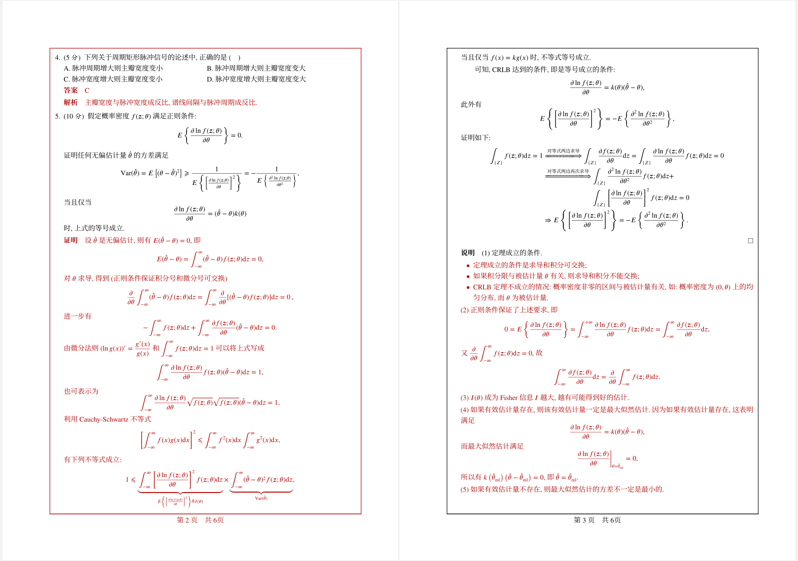
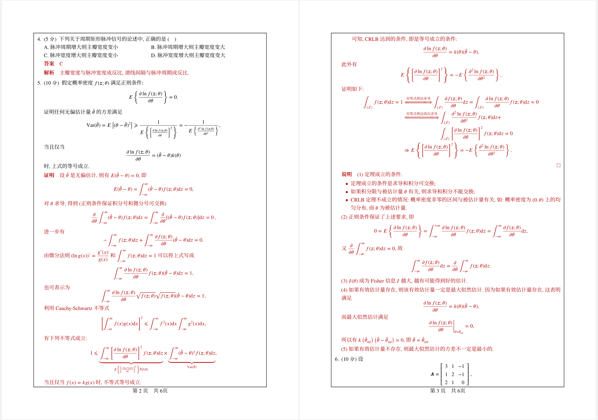

最近在用LaTeX排版时有一个需求——页面加框,这是一个很简单的需求,但实际上遇到了一些小问题.
方案一 fancybox
使用fancybox插入页面框是最为简捷的,代码如下:
1 | %% 导言区 |
这样的设置本应该没有什么问题,但是我的排版内容比较特殊,不同字段的不同颜色导致页面的框线、甚至是内容本身的颜色出现问题,但也没有办法,毕竟人家fancybox作者就说了——
Warning: The commands described in this section change LATEX’s output routine, and may not work with document styles that do the same. Also, bad arguments can cause serious errors with uninformative error messages.

方案二 eso-pic
经过一番查找,采用另一种方案,虽然比较曲折,但可以解决上述问题,并且更加灵活,代码如下:
1 | \documentclass{article} |
此方案解决了方案一的问题.

参考
[1] fancybox Documentation– Variants of and other games with boxes
[2] LaTex技巧229：用 fancybox 宏包给页面加边框
[3] eso-pic Documentation – Add picture commands (or backgrounds) to every page
[4] Is there any easy way to put boxes around text of selected pages with the page number below the box?